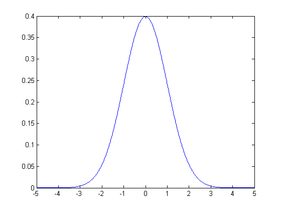
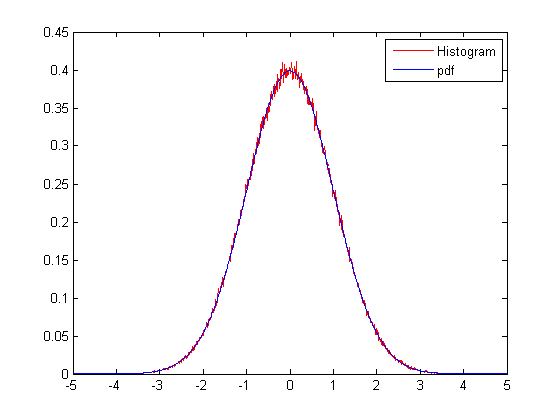

Probability Density Function
The command 'randn' produces a sample from a standard normal distribution.
z = randn
z =
0.4847
Recall that the pdf of a standard normal random variable is given by $$f_X(t) = \frac{1}{\sqrt{2\pi}}\,e^{-t^2/2}.$$ Let us sketch this function.
delta = 0.01; t = -5:delta:5; f = (1/sqrt(2*pi))*exp(-t.^2/2); figure; plot(t,f);
What does this function have to do with z above? Remember that if $\delta$ is a small positive number, we have $$ P(t-\delta/2 \leq X \leq t+\delta/2) \approx \delta \,f_X(t). $$ We can check this as follows.
N = 1000000; % draw N random variables Z = randn(1,N); t1 = 0.25; % the number of the components of Z that fall in the prescribed interval, p = sum( ( t1 - delta/2 < Z ) .* ( Z < t1 + delta/2 ) ) % the number of the components that are expected to fall in the prescribed % interval df = round( N * delta * (1/sqrt(2*pi))*exp( - t1^2 / 2 ) ) % p and df should be close
p =
3892
df =
3867
Suppose we repeat this for all values of t1.
ind = 0; for t1 = t, ind = ind + 1; p(ind) = (1/delta) * (1/N)*sum( ( t1 - delta/2 < Z ) .* ( Z < t1 + delta/2 ) ) ; end figure; plot(t,p,'r'); hold on; plot(t,f); legend('Histogram', 'pdf');
Notice how close the histogram is to the actual pdf. If we increase the size of the sample (that is, 'N'), we can obtain a histogram curve that is even closer to the pdf.
Ilker Bayram, Istanbul Teknik Universitesi, 2015